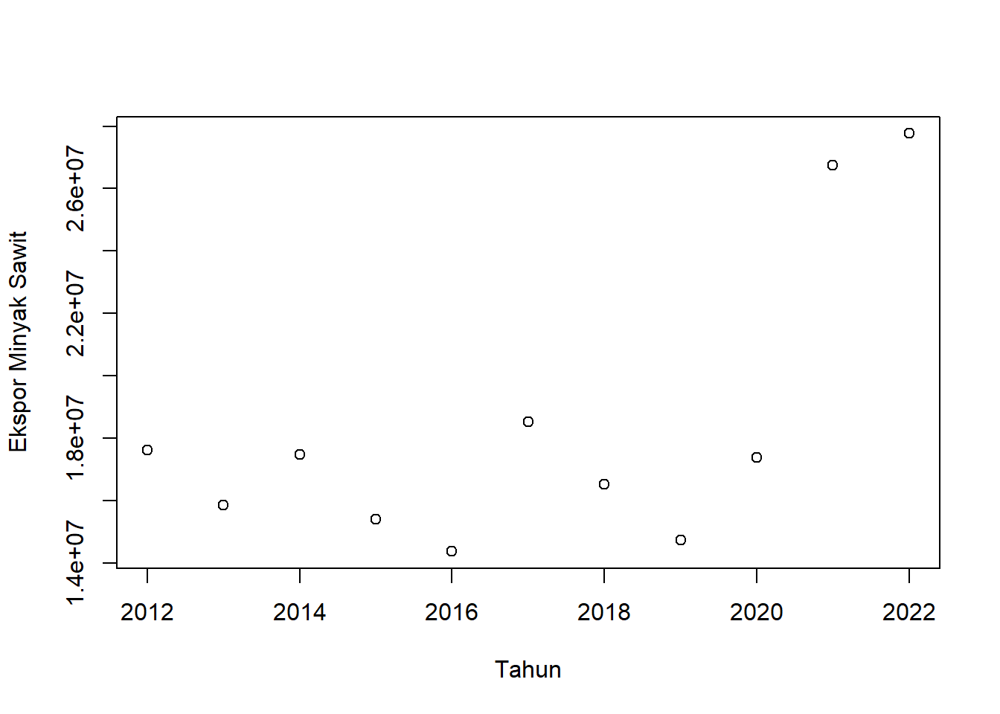
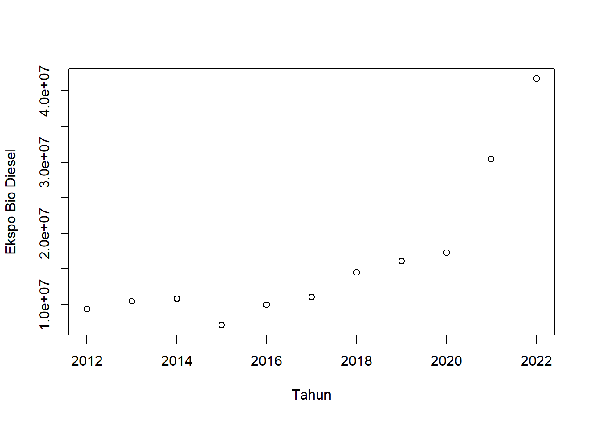
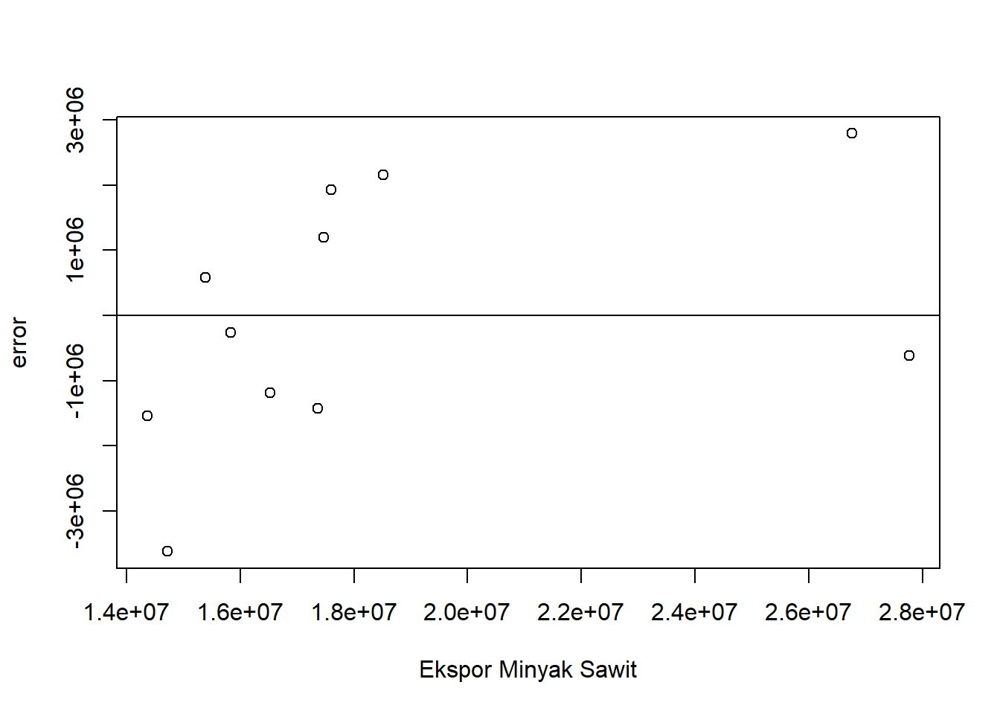
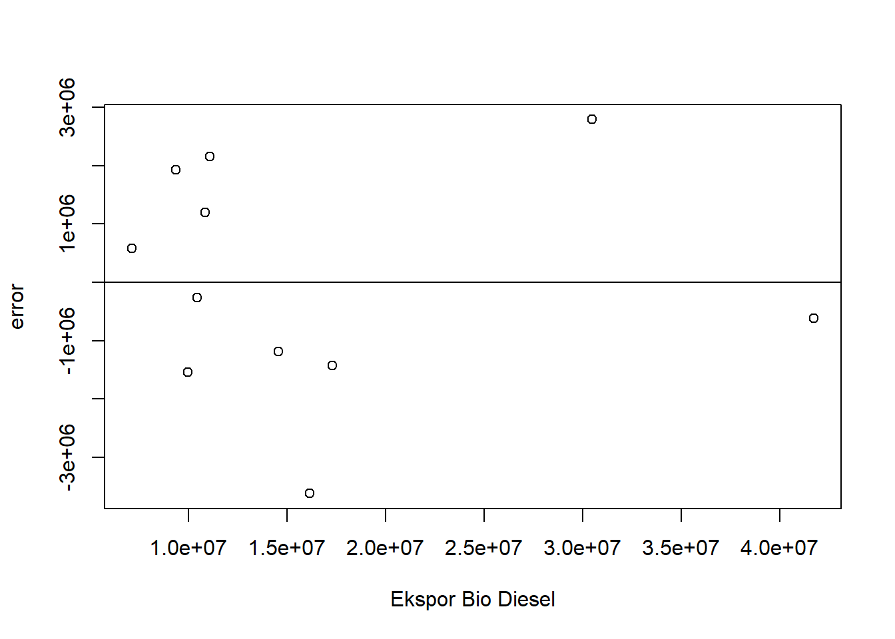

setwd("D:/METOPEL UAS/KRISNA METOPEL")
library(readxl)
library(tidyverse)
library(kableExtra)Dampak Ekspor Minyak Nabati terhadap total akumulasi ekspor Minyak dan Lemak Hewani dan nabati.
Metode Penelitian Politeknik APP Jakarta

1 Pendahuluan
1.1 Latar belakang
Latar belakang penelitian ini berfokus pada analisis pengaruh peningkatan ekspor biodiesel negara maju terhadap ekspor minyak sawit Indonesia. Dalam beberapa tahun terakhir, permintaan global terhadap biodiesel telah meningkat secara signifikan, terutama di negara-negara maju. Hal ini sejalan dengan upaya global untuk mengurangi emisi gas rumah kaca dan beralih ke energi yang lebih ramah lingkungan.
Indonesia, sebagai produsen minyak sawit terbesar di dunia, memiliki peran penting dalam pasar biodiesel global. Namun, peningkatan ekspor biodiesel oleh negara-negara maju dapat mempengaruhi ekspor minyak sawit Indonesia. Oleh karena itu, penelitian ini bertujuan untuk menganalisis dan memahami dinamika dan implikasi dari fenomena ini.
Dalam konteks ini, minyak sawit memiliki beberapa keunggulan dibandingkan dengan jenis minyak nabati lainnya. Pertama, minyak sawit memiliki tingkat produktivitas yang tinggi dibandingkan dengan tanaman minyak nabati lainnya. Dalam satu hektar lahan yang sama, kelapa sawit menghasilkan minyak nabati dalam volume yang lebih besar dibandingkan kedelai, rapeseed, dan bunga matahari⁶⁷. Kedua, minyak sawit mengandung asam lemak jenuh yang tinggi, seperti asam laurat, asam miristat, dan asam palmitat, serta asam lemak tak jenuh seperti asam oleat dan asam linoleat. Ketiga, minyak sawit memiliki pasokan yang relatif stabil sepanjang tahun⁷.
Dengan demikian, penelitian ini diharapkan dapat memberikan wawasan baru tentang bagaimana peningkatan ekspor biodiesel negara maju dapat mempengaruhi ekspor minyak sawit Indonesia dan bagaimana keunggulan minyak sawit dapat dimanfaatkan dalam konteks ini. Penelitian ini juga diharapkan dapat memberikan rekomendasi strategis bagi pemerintah dan industri terkait untuk merespons dinamika pasar biodiesel global dan memaksimalkan potensi ekspor minyak sawit Indonesia.
1.2 Ruang lingkup
Ruang lingkup penelitian ini meliputi:
Data Ekspor: Penelitian ini akan menganalisis data ekspor biodiesel dari negara-negara maju dan data ekspor minyak sawit Indonesia. Data ini mencakup nilai dari masing-masing variabel dalam satuan Ribu USD.
Variabel Penelitian: Variabel independen dalam penelitian ini adalah ekspor biodiesel negara-negara maju, sedangkan variabel dependennya adalah ekspor minyak sawit Indonesia.
Metode Analisis: Penelitian ini akan menggunakan metode regresi linear untuk menganalisis hubungan antara ekspor biodiesel negara-negara maju dan ekspor minyak sawit Indonesia. Model regresi linear akan digunakan untuk memprediksi pengaruh peningkatan ekspor biodiesel negara-negara maju terhadap ekspor minyak sawit Indonesia.
Periode Waktu: Penelitian ini akan mencakup periode waktu dari tahun 2012 hingga 2022, untuk memastikan bahwa data yang dianalisis relevan dan dapat memberikan wawasan yang akurat tentang tren saat ini.
Sumber Data: Data untuk penelitian ini akan diperoleh dari Badan Pusat Statistik (BPS) dan TradeMap, yang merupakan sumber data yang dapat dipercaya dan diakui.
Dengan demikian, ruang lingkup penelitian ini dirancang untuk memberikan pemahaman yang mendalam tentang dinamika ekspor biodiesel dan minyak sawit dan bagaimana keduanya saling mempengaruhi. Penelitian ini juga diharapkan dapat memberikan rekomendasi strategis bagi pemerintah dan industri terkait untuk merespons dinamika pasar biodiesel global dan memaksimalkan potensi ekspor minyak sawit Indonesia.
1.3 Rumusan masalah
Berikut adalah beberapa rumusan masalah yang berkaitan dengan analisis yang akan dilakukan:
Bagaimana pengaruh peningkatan ekspor biodiesel negara-negara maju terhadap ekspor minyak sawit Indonesia dalam periode 2012-2022?
Apakah ada hubungan signifikan antara ekspor biodiesel negara-negara maju dan ekspor minyak sawit Indonesia?
Bagaimana dampak peningkatan ekspor biodiesel negara-negara maju terhadap nilai ekspor minyak sawit Indonesia?
Rumusan masalah ini dirancang untuk membantu dalam melakukan analisis menggunakan metode regresi linear dan memberikan pemahaman yang lebih baik tentang hubungan antara ekspor biodiesel negara-negara maju dan ekspor minyak sawit Indonesia.
1.4 Tujuan dan manfaat penelitian
Tujuan Penelitian:
Untuk menganalisis pengaruh peningkatan ekspor biodiesel negara-negara maju terhadap ekspor minyak sawit Indonesia dalam periode 2012-2022.
Untuk memahami hubungan antara ekspor biodiesel negara-negara maju dan ekspor minyak sawit Indonesia.
Untuk mengevaluasi bagaimana keunggulan minyak sawit, baik dari segi kandungan maupun produktivitas, dapat mempengaruhi ekspor minyak sawit Indonesia.
Manfaat Penelitian:
Bagi Mahasiswa: Penelitian ini dapat memberikan wawasan dan pemahaman yang lebih baik tentang dinamika ekspor biodiesel dan minyak sawit. Mahasiswa dapat mempelajari bagaimana melakukan analisis menggunakan metode regresi linear dan bagaimana menerapkannya dalam konteks nyata. Selain itu, penelitian ini juga dapat menjadi referensi untuk penelitian selanjutnya yang berhubungan dengan topik serupa.
Bagi Institusi Pendidikan: Hasil penelitian ini dapat digunakan sebagai bahan ajar atau studi kasus dalam mata kuliah terkait, seperti Ekonomi Internasional, Manajemen Agribisnis, atau Ilmu Lingkungan.
Bagi Pemerintah dan Industri Terkait: Penelitian ini dapat memberikan rekomendasi strategis bagi pemerintah dan industri terkait untuk merespons dinamika pasar biodiesel global dan memaksimalkan potensi ekspor minyak sawit Indonesia. Selain itu, penelitian ini juga dapat menjadi dasar dalam pengambilan kebijakan terkait ekspor minyak sawit dan biodiesel. ### Package
2 Studi pustaka
Biodiesel merupakan senyawa metil ester dengan asam lemak rantai panjang seperti laurat, palmitat,stearat, oleat, dan lain‐lain. Biodiesel merupakan bahan bakar alternatif dari sumber daya terbarukan (renewable resources), dengan komposisi ester asam lemak dari minyak nabati antara lain: minyak kelapa sawit, minyak kelapa, minyak jarak pagar,minyak biji kapuk, dan masih ada lebih dari 30 macam tumbuhan Indonesia yang memiliki potensial untuk dijadikan bahan baku pembuatan biodiesel [Lemigas, 2005].
Sebagai bahan bakar alternatif, biodiesel memiliki banyak keunggulan dibandingkan dengan bahan bakar minyak bumi diantaranya: ramah lingkungan, emisi pencemaran udara yang relatif rendah, dapat terurai secara alami (biodegradable), dan bisa digunakan tanpa memerlukan proses modifikasi mesin. Biodiesel dihasilkan melalui reaksi transesterifikasi, yaitu reaksi antara minyak nabati atau lemak hewani dengan alkohol menghasilkan alkil ester (biodiesel) dan hasil samping gliserol dengan bantuan katalis [Nairoj, 2009]
Biodiesel merupakan bahan bakar yang ramah terhadap lingkungan. Biodiesel tidak mengandung berbahaya seperti Pb, bersifat biodegradable, emisi gas buangnya juga lebih rendah dibandingkan emisi bahan bakar diesel. Biodiesel memiliki efek pelumasan yang tinggi sehingga dapat memperpanjang umur mesin dan memiliki angka setana yang tinggi ( > 50).
Minyak nabati merupakan sumber bahan baku yang menjanjikan bagi proses produksi biodiesel karena bersifat terbarukan, dapat diproduksi dalam skala besar, dan ramah lingkungan (Wenten,2010).
Kegiatan perdagangan internasional yang memberikan rangsangan guna membutuhkan permintaan dalam negeri yang menyebabkan tumbuhnya industri-industri pabrik besar, bersamaan dengan struktur politik yang stabil dan lembaga sosial yang fleksibel. Berdasarkan uraian di atas, terlihat bahwa ekspor mencerminkan aktivitas perdagangan antarbangsa yang dapat memberikan dorongan dalam dinamika pertumbuhan perdagangan internasional, sehingga suatu negara-negara yang sedang berkembang kemungkinan untuk mencapai kemajuan perekonomian setaraf dengan negara-negara yang lebih maju (Todaro, 2002:49).
Ekspor adalah pembelian negara lain atas barang buatan perusahaan-perusahaan di dalam negeri. Faktor terpenting yang menentukan ekspor adalah kemampuan dari Negara tersebut untuk mengeluarkan barangbarang yang dapat bersaing dalam pasaran luar negeri. (Sukirno, 2008: 205).
Ekspor akan secara langsung mempengaruhi pendapatan nasional. Akan tetapi, hubungan yang sebaliknya tidak selalu berlaku, yaitu kenaikan pendapatan nasional belum tentu menaikkan ekspor oleh karena pendapatan nasional dapat mengalami kenaikan sebagai akibat dari kenaikan pengeluaran rumah tangga, investasi perusahaan, pengeluaran pemerintah dan penggantian barang impor dengan barang buatan dalam negeri. (Sukirno, 2008:206).
Ekspor neto merupakan selisih antara ekspor total dengan impor total suatu negara. Apabila nilai ekspor neto positif, berartinilai ekspor lebih besar dari nilai impor dan apabila nilai ekspor neto negatif, berarti nilai ekspor lebih kecil dari nilai impor (Case and Fair, 2007: 387)
3 Metode penelitian
3.1 Data
| tahun | bio | sawit |
|---|---|---|
| 2012 | 9359709 | 17602168 |
| 2013 | 10452561 | 15838850 |
| 2014 | 10858953 | 17464905 |
| 2015 | 7127356 | 15385275 |
| 2016 | 9958555 | 14365422 |
| 2017 | 11094195 | 18513121 |
| 2018 | 14547342 | 16527848 |
| 2019 | 16138518 | 14716275 |
| 2020 | 17299354 | 17364812 |
| 2021 | 30462810 | 26755136 |
| 2022 | 41707132 | 27765830 |
Penelitian ini dirancang untuk menganalisis hubungan antara dua variabel menggunakan metode regresi linear dengan pendekatan Ordinary Least Squares (OLS). Data yang digunakan dalam penelitian ini adalah data time series, yang mencakup periode waktu tertentu. Metode OLS digunakan untuk meminimalkan jumlah kuadrat residu dalam model regresi linear, sehingga memberikan estimasi yang paling akurat untuk koefisien regresi. Dengan demikian, penelitian ini bertujuan untuk memberikan pemahaman yang lebih baik tentang dinamika antara dua variabel tersebut sepanjang waktu.
3.2 Metode analisis
Dalam penelitian ini, kami menggunakan metode analisis regresi linear untuk mengevaluasi hubungan antara ekspor biodiesel dari negara maju dan ekspor minyak sawit dari Indonesia. Variabel independen dalam model ini adalah volume ekspor biodiesel dari negara maju, sementara variabel dependennya adalah volume ekspor minyak sawit dari Indonesia.
Model regresi linear ini bertujuan untuk memahami sejauh mana ekspor biodiesel dari negara maju mempengaruhi ekspor minyak sawit dari Indonesia. Dengan kata lain, kita ingin mengetahui apakah peningkatan dalam ekspor biodiesel dari negara maju berhubungan dengan peningkatan dalam ekspor minyak sawit dari Indonesia.
Dengan melakukan analisis ini, kita dapat mengukur pengaruh ekspor biodiesel dari negara maju terhadap ekspor minyak sawit dari Indonesia dan sejauh mana hubungan ini signifikan secara statistik. Hasil dari analisis ini dapat memberikan wawasan yang berharga bagi para pembuat kebijakan dan pemangku kepentingan di industri ini.
Model Yang Digunakan : \[ Y=\beta_0 + \beta_1 X+\mu. \] dimana: - \(Y\) adalah total akumulasi ekspor pada Bab 15 BTKI, - \(X_1\) adalah ekspor minyak sawit,- \(\mu\) adalah kesalahan acak (error).
4 Pembahasan
4.1 Pembahasan masalah
4.1.1 Plot dan Data
#impor dataset
read_excel("bio.xlsx")# A tibble: 11 × 3
tahun bio sawit
<dbl> <dbl> <dbl>
1 2012 9359709 17602168
2 2013 10452561 15838850
3 2014 10858953 17464905
4 2015 7127356 15385275
5 2016 9958555 14365422
6 2017 11094195 18513121
7 2018 14547342 16527848
8 2019 16138518 14716275
9 2020 17299354 17364812
10 2021 30462810 26755136
11 2022 41707132 27765830dat <- read_excel("bio.xlsx")
kbl(dat) %>%
kable_styling(bootstrap_options = c("striped", "hover", "condensed", "responsive"))| tahun | bio | sawit |
|---|---|---|
| 2012 | 9359709 | 17602168 |
| 2013 | 10452561 | 15838850 |
| 2014 | 10858953 | 17464905 |
| 2015 | 7127356 | 15385275 |
| 2016 | 9958555 | 14365422 |
| 2017 | 11094195 | 18513121 |
| 2018 | 14547342 | 16527848 |
| 2019 | 16138518 | 14716275 |
| 2020 | 17299354 | 17364812 |
| 2021 | 30462810 | 26755136 |
| 2022 | 41707132 | 27765830 |
reg1<-lm(sawit~bio,data=dat)plot(dat$tahun,dat$sawit,xlab="Tahun",ylab="Ekspor Minyak Sawit")
plot(dat$tahun,dat$bio,xlab="Tahun",ylab="Ekspo Bio Diesel")
dat$m<-resid(reg1)
plot(dat$sawit,dat$m,xlab="Ekspor Minyak Sawit",ylab="error")
abline(h=0) # membuat garis horizontal di y=0
dat$m<-resid(reg1)
plot(dat$bio,dat$m,xlab="Ekspor Bio Diesel",ylab="error")
abline(h=0)
4.2 Analisis masalah
Hasil regresinya adalah
summary(reg1)
Call:
lm(formula = sawit ~ bio, data = dat)
Residuals:
Min 1Q Median 3Q Max
-3621658 -1307094 -265879 1563614 2791224
Coefficients:
Estimate Std. Error t value Pr(>|t|)
(Intercept) 1.200e+07 1.168e+06 10.275 2.85e-06 ***
bio 3.928e-01 6.104e-02 6.435 0.00012 ***
---
Signif. codes: 0 '***' 0.001 '**' 0.01 '*' 0.05 '.' 0.1 ' ' 1
Residual standard error: 2037000 on 9 degrees of freedom
Multiple R-squared: 0.8215, Adjusted R-squared: 0.8016
F-statistic: 41.41 on 1 and 9 DF, p-value: 0.0001203Nilai R-squared sebesar 0,8215 dalam analisis regresi menunjukkan bahwa sekitar 82,15% variasi dalam ekspor minyak sawit Indonesia dapat dijelaskan oleh variasi dalam ekspor biodiesel dari negara maju. Ini adalah indikasi kuat bahwa ada hubungan yang signifikan antara kedua variabel ini.
Sementara itu, koefisien regresi sebesar 3,928 untuk variabel independen (biodiesel) menunjukkan bahwa setiap peningkatan sebesar 1 unit (dalam USD) dalam ekspor biodiesel dari negara maju akan berhubungan dengan peningkatan sebesar 3,928 unit (dalam USD) dalam ekspor minyak sawit Indonesia, asumsi variabel lain tetap konstan. Ini menunjukkan bahwa ekspor biodiesel memiliki pengaruh positif signifikan terhadap ekspor minyak sawit Indonesia.
##Kesimpulan
Berdasarkan hasil analisis regresi, dapat disimpulkan bahwa ekspor biodiesel dari negara maju memiliki pengaruh yang signifikan terhadap ekspor minyak sawit dari Indonesia. Nilai R-squared sebesar 0,8215 menunjukkan bahwa sekitar 82,15% variasi dalam ekspor minyak sawit Indonesia dapat dijelaskan oleh variasi dalam ekspor biodiesel dari negara maju. Ini menunjukkan hubungan yang kuat antara kedua variabel ini.
Koefisien regresi untuk variabel independen (biodiesel) sebesar 3,928 menunjukkan bahwa setiap peningkatan sebesar 1 USD dalam ekspor biodiesel dari negara maju akan berhubungan dengan peningkatan sebesar 3,928 USD dalam ekspor minyak sawit Indonesia, asumsi variabel lain tetap konstan. Nilai intercept sebesar 1,200 menunjukkan bahwa jika ekspor biodiesel dari negara maju adalah nol, maka ekspor minyak sawit Indonesia akan bernilai 1,200 USD.
Dari analisis ini, kita dapat membuat beberapa asumsi. Pertama, ada potensi yang signifikan untuk meningkatkan ekspor minyak sawit Indonesia melalui peningkatan ekspor biodiesel dari negara maju. Kedua, kebijakan yang mendukung produksi dan ekspor biodiesel di negara maju dapat memiliki dampak positif terhadap industri minyak sawit di Indonesia.
Alasan banyak negara maju berlomba untuk menghasilkan bahan bakar terbarukan seperti biodiesel antara lain adalah untuk mengurangi ketergantungan pada bahan bakar fosil, mengurangi emisi gas rumah kaca, dan mengurangi ketidakpastian yang disebabkan oleh volatilitas harga bahan bakar fosil. Selain itu, produksi biofuel dapat memberikan peluang ekonomi baru dan membantu negara-negara menjadi lebih mandiri dari sumber energi tradisional seperti minyak, batu bara, dan gas..
5 Referensi
Noiroj, K., Intarapong, P., Luengnaruemitchai, A. and Jai‐In, S. 2009. A comparative study of KOH/Al2O3 and KOH/NaY catalysts for biodiesel production via transesterification from palm oil. Renewable Energy, 34 2008), 1145–1150.
Lemigas. 2005. Naskah Akademik Rancangan Kebijakan Biodiesel. Jakarta: Pusat Penelitian dan Pengembangan Teknologi Minyak dan Gas Bumi.
Case, Karl E., Fair, Ray C. 2007. Prinsip-prinsip Ekonomi. Edisi kedelapan. Penerbit Erlangga. Jakarta.
Gandhi, Dyah Virgoana. 2006. Pengelolaan Cadangan Devisa di Bank Indonesia. PPSK. Jakarta.
Gujarati, Damodar N. 2006. Dasar-dasar Ekonometrika Jilid 1 dan 2. Edisi Ketiga. Erlangga. Jakarta. Sukirno, Sadono. 2008. Makro Ekonorni Teori Pengantar, PT. Raja Grafindo Persada, Jakarta.
Todaro, P. 2002. Pembangunan Ekonomi Dunia ke Tiga, Edisi 7. Erlangga. Jakarta.
I.G. Wenten, Review Proses Produksi Biodiesel dengan Menggunakan Membran Reaktor, Seminar Rekayasa Kimia dan Proses, Pusat Penelitian Bioteknologi ITB,2010.